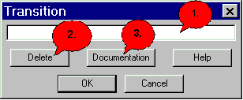

Transition Dialog |
|
 1. Enter the name of the transition here. 2. In order to remove the current transition. If you pressed 'Del', you must click afterwards 'OK' in order to delete the transition absolutely. 3. Here you come into the Docu-Dialog. 4. Here you come into the dialogue help, in whom you are for the moment. 5. Here you leave the dialog and store the entered data. 6. Here you can leave the dialog without storing.
|